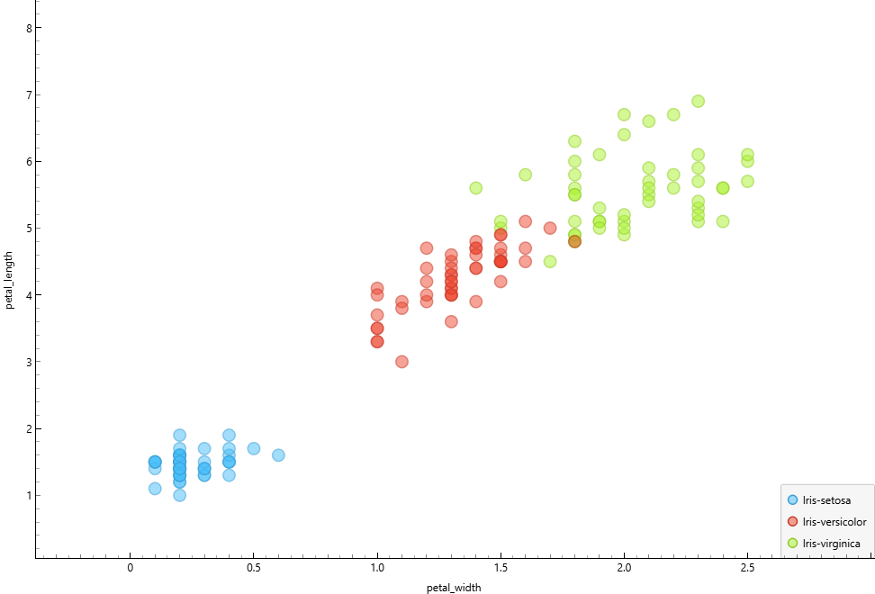

Pertemuan 2#
1. CRISP-DM#
CRISP-DM (Cross Industry Standard Process for Data Mining) adalah standar proses dalam data mining.
Tahapannya:
Business Understanding
Data Understanding
Data Preparation
Modeling
Evaluation
Deployment
Pada pertemuan ini fokus pada tahap Data Understanding.
2. DATA UNDERSTANDING#
Data Understanding adalah proses memahami isi dan karakteristik data sebelum dilakukan analisis atau modeling.
Tujuannya:
Mengetahui struktur data
Mengetahui tipe data
Mengetahui kualitas data
Mengetahui hubungan antar variabel
3. KOMPONEN MEMAHAMI DATA#
3.1 Pengumpulan Data#
Dataset yang digunakan adalah dataset Iris.
3.2 Deskripsi Data#
Dataset Iris memiliki kolom:
sepal_length
sepal_width
petal_length
petal_width
species
3.3 Exploratory Data Analysis (EDA)#
EDA dilakukan untuk:
Menghitung statistik deskriptif
Melihat korelasi
Membuat visualisasi
ANALISIS DATASET IRIS#
1. Import Library dan Membaca Dataset#
import pandas as pd
import matplotlib.pyplot as plt
# Membaca dataset
df = pd.read_csv("iris.csv")
# Menampilkan 5 data pertama
df.head()
2. Statistik Deskriptif#
2.1 Statistik Umum#
df.describe()
Digunakan untuk melihat ringkasan seluruh kolom numerik.
2.2 Statistik Sepal Length#
df["sepal_length"].describe()
Berdasarkan hasil perhitungan diperoleh:
Jumlah data: 150
Nilai minimum: 4.3
Kuartil 1 (Q1): 5.1
Median (Q2): 5.8
Kuartil 3 (Q3): 6.4
Nilai maksimum: 7.9
Rata-rata (Mean): 5.84
Dilakukan perhitungan:
Mean
Median
Standar deviasi
Tujuan: Untuk memahami distribusi data.
Interpretasi#
Rata-rata dan median hampir sama sehingga distribusi relatif simetris.
Rentang data dari 4.3 sampai 7.9 menunjukkan variasi ukuran sepal cukup lebar.
Sebanyak 50% data berada di antara 5.1 dan 6.4.
2.3 Statistik Sepal Width#
df["sepal_width"].describe()
Interpretasi:
Variasi lebih sempit dibanding sepal_length.
Tidak terlalu ekstrem dalam perbedaan antar spesies.
2.4 Statistik Petal Length#
df["petal_length"].describe()
Interpretasi:
Memiliki perbedaan signifikan antar spesies.
Berpotensi kuat sebagai fitur pembeda.
2.5 Statistik Petal Width#
df["petal_width"].describe()
Interpretasi:
Variasi jelas antar spesies.
Sangat efektif untuk klasifikasi.
3. Korelasi#
Untuk melihat korelasi antar variabel:
df.corr(numeric_only=True)
Khusus korelasi antara petal_length dan petal_width:
df["petal_length"].corr(df["petal_width"])
Hasil menunjukkan korelasi positif yang kuat.
Interpretasi: Jika petal_length meningkat maka petal_width juga meningkat.
4. Scatter Plot#
plt.scatter(df["petal_length"], df["petal_width"])
plt.xlabel("Petal Length")
plt.ylabel("Petal Width")
plt.title("Scatter Plot Petal Length vs Petal Width")
plt.show()
Scatter plot menunjukkan bahwa:
Setosa terpisah jelas dari dua spesies lainnya.
Versicolor dan Virginica sedikit berdekatan tetapi masih dapat dibedakan.
Kesimpulan: Petal_length dan petal_width efektif digunakan untuk membedakan spesies.
Visualisasi Scatter Plot#
Berikut adalah visualisasi hubungan antara petal_length dan petal_width:

Gambar di atas merupakan hasil visualisasi menggunakan Orange dengan pewarnaan berdasarkan spesies. Terlihat bahwa spesies Setosa terpisah jelas, sedangkan Versicolor dan Virginica memiliki kedekatan tetapi masih dapat dibedakan.
INSIGHT ANALISIS#
Petal_length dan petal_width memiliki hubungan positif yang kuat.
Kedua fitur tersebut mampu memisahkan spesies secara jelas.
Fitur petal lebih kuat dibandingkan fitur sepal dalam membedakan spesies.
Dataset Iris termasuk permasalahan klasifikasi karena target berupa kategori (species).